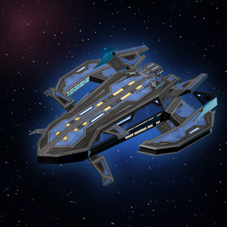
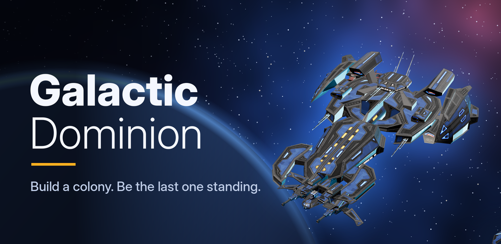
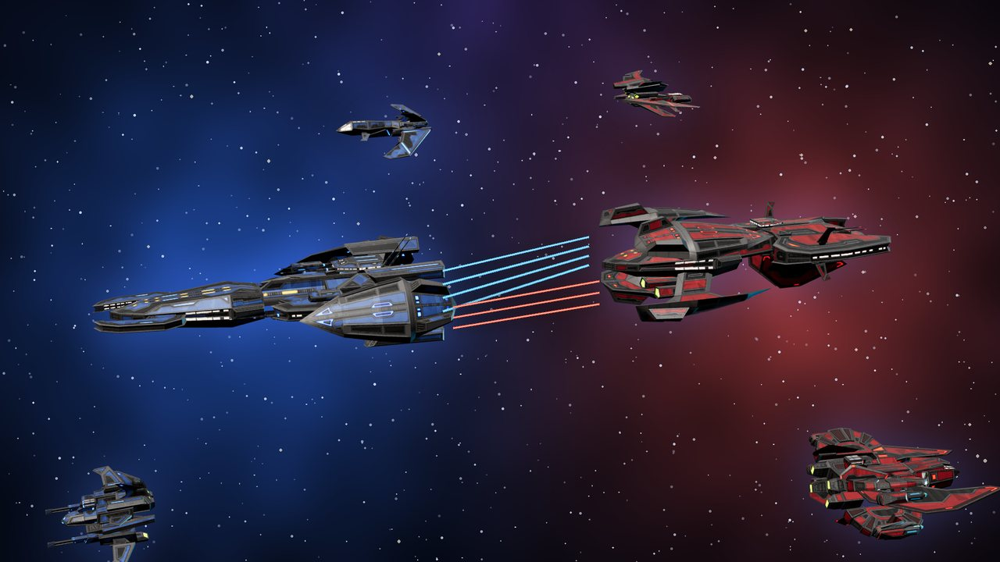
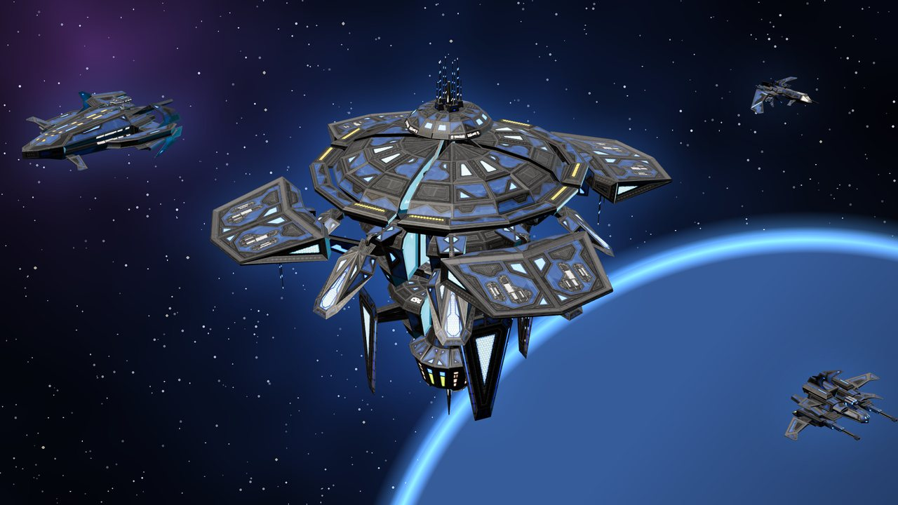

Galactic Dominion
BUILD. RESEARCH. CONQUER THE SECTOR.
Found a colony, grow it into a fortified starbase and send your fleets against the rival powers of the sector. Galactic Dominion is a 3D sci-fi colony strategy game built for phones, tablets and PC.

Features
- Build and power a colony: mining, energy, research, defences and shipyards
- A 15-mission campaign across three chapters with objectives, bonus goals and star ratings
- Survival mode: hold out against endless, escalating waves of hostile ships
- Free For All: 3, 4 or 5 AI rivals fight each other and you until one colony is left
- Research technologies, unlock stronger buildings and command your fleets in real time
- Touch controls made for phones and tablets, with mouse and keyboard on PC
Images
Concept renders of the in-game ship models. Gameplay screenshots will follow.

